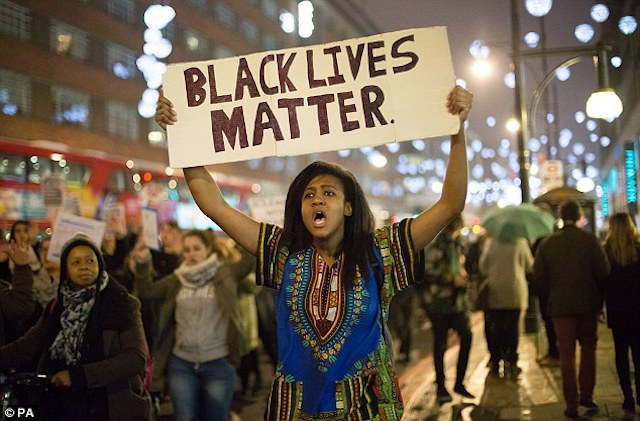

2020-07-26 08:00

The Massachusetts House just passed their own police accountabily bill — long on police concessions and short on accountability. Despite language that says Qualified Immunity will be “studied,” everybody knows what that means. This is House Speaker Bob DeLeo’s way of strangling progressive legislation — even reforms that a majority of the public supports. As a lobbyist once said of the Massachusetts Legislature, “Don’t confuse what goes on in this building with democracy.”
Carol Rose, executive director of the ACLU of Massachusetts, released the following statement on the House bill:
“For months, people across the country and the state have been marching in the streets to demand systemic change. Unfortunately, this bill does not reflect the fierce urgency that deadly police violence against Black people demands. Instead, it reflects the depth of entrenched opposition to necessary police reform. Police unions and officers used the weapon of fear to maintain the status quo and undermine even very moderate reforms.
“Ultimately, this piece of legislation misses the mark, because it will not help victims of violence hold police accountable. Let’s be clear: Massachusetts is not immune to police misconduct. In order to make any laws about excessive use of force or other police abuses meaningful, Massachusetts must reform our civil rights laws – including by ending qualified immunity, which denies victims their day in court. When the final bill is negotiated, it should empower victims of police violence to seek justice for the harms they have suffered and to hold abusive officers directly accountable.”
Progressive Mass. has published a guide, Here’s How Your State Rep Voted on Police Reform, including how House members voted on the Senate version, S.2820. Bristol County “Democrats” Carole Fiola, Jim Hawkins, Chris Markey, Alan Silvia, and Paul Schmid all voted with Republicans against the Senate version.
When it comes to supporting wars and the police state, we can usually count on the media to tell us a plastic fork is silver cutlery. Several media outlets have described the House bill as “sweeping” when in fact it sacrificed critical police accountability measures to police union lobbying.
Let’s be honest. neither political party wants police reform — even in supposed Liberal bastions like Massachusetts. What just happened in the Commonwealth has played out all over the nation. In Missouri, for example, when Kansas City Mayor David Alvey assembled his Task Force on Community and Police Relations, he invited Police Chief Michael York and Wyandotte County Sheriff Don Ash — but snubbed Kansas City’s reform District Attorney Mark Dupree, a Black man, because he wasn’t sufficiently “objective.”
Finally, no discussion of police accountability would be complete without the local press quoting a man who is neither a police officer nor has ever been held accountable to the Massachusetts legislature.